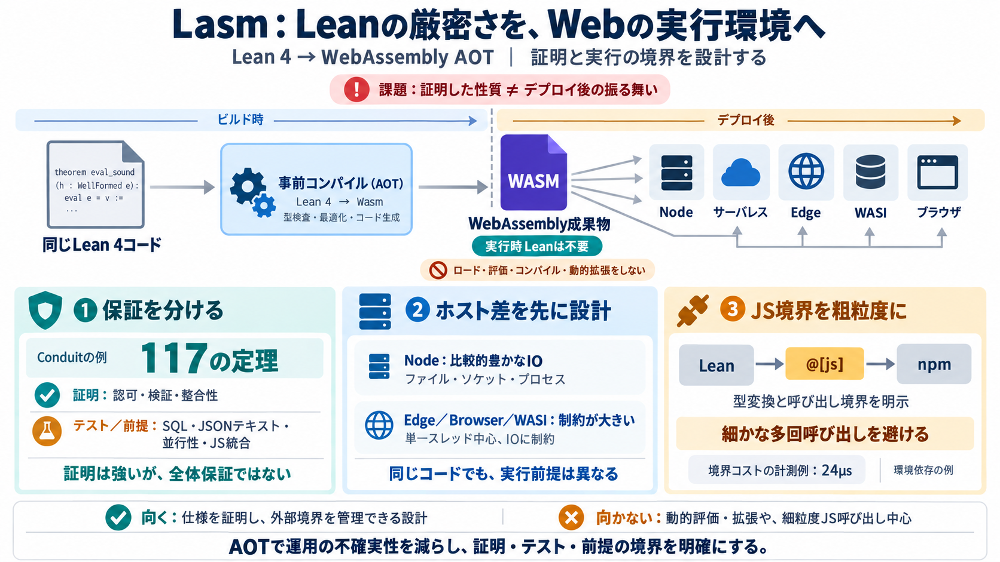

Show HN: Lasm – Write formally verified webapps in Lean for Node/serverless/edge
because it is a general purpose programming language with formal verification built directly into it. You can build gene…

Lean 4のプログラムをWebAssemblyへ事前（AOT）コンパイルし、Node・サーバレス・Edge・WASI・ブラウザへ展開するための開発基盤です。
「Leanで証明した性質」と「デプロイ後の実行時に本当に同じ振る舞いが起きるか」は別問題です。特にサーバレス/Edge/ブラウザでは、実行環境の制約が増え、境界の前提が崩れやすくなります。
Lasmは、デプロイ後にLeanモジュールのロード・評価・コンパイル等を行わない設計を中核にします。つまり「AOT成果物だけ」で振る舞いを完結させ、運用の不確実性を減らします。
同一のLeanコードベースを、Nodeサーバからサーバレス関数・Edge・WASI・ブラウザまで現実のホストへ載せることを目指します。
Lasmの信頼モデルは「証明できる部分」と「テスト/前提で担保する部分」を分けます。Conduit（RealWorld）では、その境界が明示されています。
ConduitはLeanでの形式的保証を、API仕様（認可・ページング・検証）やデータ表現（JSON/Markdown安全性）に反映します。
READMEでは、デプロイ後に「Leanのモジュールロード・評価/コンパイル・REPL的挙動・カーネル利用・プラグイン動的ロード」等を行わない（禁止）方針が明記されています。
Nodeはスレッド/ファイル/ソケット/プロセス等を含み、Edgeやブラウザ等は単一スレッドで制約が大きい、といった差があります。したがってIOの前提を先に設計する必要があります。
Leanからnpm関数を呼ぶときは@[js]でバインディングを宣言します。各呼び出しは境界を跨ぐため、細粒度の呼び出しが性能に影響し得ます（計測例として24µs）。
Lasmは「証明可能な仕様を中心に据え、外部境界をテストと前提で管理する」場面に強いです。逆に、動的評価や柔軟なランタイム拡張を前提にする設計とは相性が悪くなります。
Lasmは、Leanの厳密さをWeb/サーバレスの現実に持ち込むための基盤で、実行時にLeanを使わないAOT方針と、証明/テストの信頼境界を前提として設計されます。
because it is a general purpose programming language with formal verification built directly into it. You can build gene…
Title: lean node startup studio Information Image 5: lean node startup studio. # lean node startup studio Information. V…
JavaScript is disabled in your browser. enable it to enjoy the full features of Tracxn. Tracxn.com Android Apple Chrome…
Title: Lean Node - 2026 Investor Profile, Portfolio, Team & Investment Trends - Tracxn JavaScript is disabled in your br…
The Louisiana Art & Science Museum has also received a 2023 Louisiana Cultural Care Fund Grant, which provides generous …